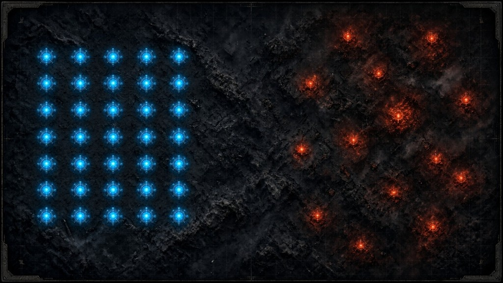

1
В правом вертикальном ряду нажмите на иконку VS (она последняя в списке)
Место для скриншота — положите файл в assets/screenshots
Вы можете использовать бесплатный телепорт, чтобы выровнять базу на своём сервере. Для этого в субботу слетайте к врагу, а при возвращении выберите новое место для базы бесплатно. Подробнее ниже.
Полёт к врагу и возвращение домой бесплатны только в специальном временном окне.
Ставьте вашу базу впритык к соседним базам, выравнивая её по горизонтали и вертикали относительно других баз. Для выравнивания по вертикали удобно ориентироваться по табличкам с именами.

Дома база должна стоять плотно к соседям и в одной линии с рядом — так альянсу проще защищаться и не терять порядок на карте.
Когда вашу базу сжигают дотла, вы автоматически перемещаетесь в случайное место на карте. Используйте описанный выше порядок действий, чтобы вернуться на прежнее место бесплатно.
Чтобы применить форматирование текста в чате, перед текстом сообщения напишите подходящий тег.
В начале сообщения поставьте код тега и напишите текст сообщения. Для быстрого использования перечисленных тегов используйте кнопку «Копировать».
Сообщение определённого цвета. Два варианта записи:
<color=#FF1493>На этой неделе грабим грузовики 97 сервера.
<#FF9999>У кого-нибудь есть С?
Можно использовать несколько тегов в одном сообщении, например сделать градиент:
<#FF0000>а <#FF6600>м<#FF9900>о<#FFCC00>ж<#FFFF00>н<#CCFF00>о <#66FF00>д<#33FF00>е<#00FF00>л<#00FF33>а<#00FF66>т<#00FF99>ь <#00FFFF>т<#00CCFF>а<#0099FF>к <#0033FF>е<#2B00FF>щ<#5500FF>ёТег в начале сообщения делает текст подчёркнутым.
<u>Важно! Свой сервер грабить нельзя!
Вставьте \n там, где нужен перенос на новую строку внутри одного сообщения.
\n
текст первой строки
текст второй строки
Тег в начале сообщения делает текст жирным.
<b>Жирный текст сообщения
Тег в начале сообщения делает текст курсивом.
<i>Курсивный текст сообщения
Тег в начале сообщения зачёркивает текст.
<s>Зачёркнутый текст сообщения
Если обнаружите другие рабочие теги форматирования — напишите, добавим в гайд.